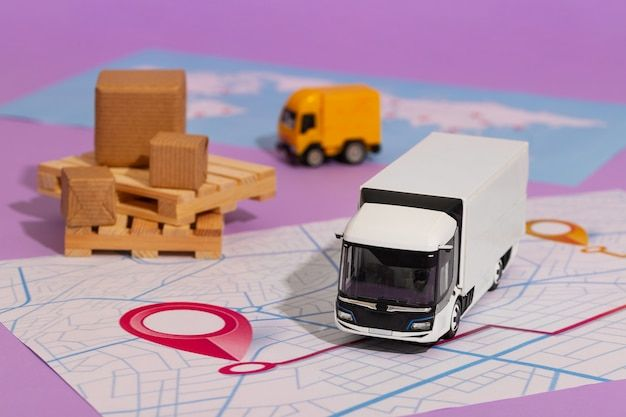

دليل نقل العفش لكبار السن - نصائح خاصة وآمنة

22 ديسمبر 2024
11 دقيقة قراءة
1,956 مشاهدة

النقل في مراحل متقدمة من العمر يتطلب تخطيطاً دقيقاً واهتماماً خاصاً بالسلامة والراحة. إليك دليل شامل لجعل هذه التجربة أكثر سهولة وأماناً.
الاعتبارات الصحية
الأدوية والعلاج
حقيبة الأدوية الطارئة
- احتفظ بجميع الأدوية الضرورية في حقيبة يد
- احمل نسخة من الوصفات الطبية
- تأكد من كفاية الأدوية لأسبوع كامل
- احفظ أرقام الأطباء والصيدليات
الأجهزة الطبية
- أجهزة قياس السكر والضغط
- المشايات والعكازات
- أجهزة الأكسجين المحمولة
- النظارات والسماعات الإضافية
التنسيق الطبي
قبل النقل
- استشر الطبيب حول قدرتك على النقل
- احصل على تقرير طبي شامل
- رتب لنقل الملف الطبي
- ابحث عن أطباء في المنطقة الجديدة
بعد النقل
- سجل لدى طبيب جديد بأسرع وقت
- تأكد من توفر الصيدليات القريبة
- ابحث عن المستشفيات المجاورة
- انضم لبرامج الرعاية المحلية
إجراءات السلامة
أمان المنزل
قائمة الأمان
أمان النقل
اختيار الشركة المناسبة
- شركة متخصصة في نقل كبار السن
- عمال مدربون على التعامل مع المسنين
- تأمين شامل ضد الحوادث
- مراجعات إيجابية من عملاء مسنين
يوم النقل
- تواجد مرافق طوال الوقت
- تجنب المشاركة في الحمل الثقيل
- الجلوس في مكان آمن ومريح
- توفر خط اتصال طوارئ
تقليل الممتلكات بحكمة
النهج العاطفي
ابدأ مبكراً
خذ وقتك في اتخاذ القرارات. البدء قبل شهور يقلل الضغط النفسي
اطلب المساعدة
اشرك العائلة والأصدقاء في عملية الفرز واتخاذ القرارات
احتفظ بالذكريات
صور القطع المهمة التي لا يمكن الاحتفاظ بها لحفظ الذكريات
خطوات عملية
يجب الاحتفاظ بها
- الأدوية والمعدات الطبية
- الملابس الموسمية الأساسية
- الوثائق المهمة
- قطعة أثاث مريحة مفضلة
- الصور العائلية المهمة
للتبرع
- الملابس الجيدة غير المستخدمة
- الكتب والمجلات
- الأدوات المنزلية الإضافية
- الألعاب والهوايات القديمة
للعائلة
- التحف العائلية
- المجوهرات الثمينة
- الأثاث الأثري
- الكتب القيمة
أولويات الراحة
غرفة النوم
الأولوية القصوى
- السرير المريح والمألوف
- الوسائد والبطانيات المفضلة
- طاولة جانبية للأدوية
- إضاءة ليلية آمنة
نصائح الترتيب
- ضع السرير بعيداً عن النوافذ المسببة للتيار
- تأكد من سهولة الوصول للحمام
- ضع الهاتف في متناول اليد
- استخدم إضاءة دافئة وناعمة
المطبخ
سهولة الوصول
- ضع الأدوات المستخدمة يومياً في متناول اليد
- استخدم أدوات مطبخ خفيفة الوزن
- ضع كرسي مريح للجلوس أثناء الطبخ
- تأكد من الإضاءة الجيدة فوق سطح العمل
منطقة الجلوس
عناصر الراحة
- كرسي مريح مع دعم للظهر
- طاولة قهوة بالارتفاع المناسب
- إضاءة جيدة للقراءة
- تلفزيون بحجم مناسب وصوت واضح
التخطيط المالي
تخطيط التكاليف
التكاليف المباشرة
- خدمات النقل المتخصصة: 2,000-5,000 ريال
- التغليف والحماية الإضافية: 500-1,000 ريال
- التأمين الشامل: 200-500 ريال
- الخدمات الإضافية (تنظيف، ترتيب): 800-1,500 ريال
التكاليف غير المباشرة
- تحديث العنوان في الوثائق
- نقل الاشتراكات والخدمات
- إعداد المنزل الجديد
- تكاليف التكيف المؤقت
برامج المساعدة
المساعدة الحكومية
- برامج دعم كبار السن
- خدمات الرعاية الاجتماعية
- تسهيلات نقل الخدمات
المساعدة المجتمعية
- متطوعو الجمعيات الخيرية
- برامج مساعدة الجيران
- خدمات الكنائس والمساجد
الجدول الزمني المثالي
3 شهور قبل النقل
البداية والتخطيط
- قرار النقل والبحث عن المكان الجديد
- استشارة الأطباء
- البدء في فرز الممتلكات
- البحث عن شركات نقل متخصصة
6 أسابيع قبل النقل
الترتيبات الأساسية
- حجز شركة النقل
- ترتيب نقل الخدمات
- إشعار البنوك والمؤسسات
- تحديد تاريخ النقل النهائي
2 أسبوع قبل النقل
الاستعدادات النهائية
- تأكيد جميع الترتيبات
- تحضير حقيبة الضروريات
- ترتيب المساعدة يوم النقل
- التأكد من الأدوية والوثائق
الأسبوع الأول بعد النقل
التكيف والاستقرار
- ترتيب الأولويات الأساسية
- التسجيل مع الأطباء الجدد
- التعرف على الحي والمرافق
- إعادة تأسيس الروتين اليومي
نصائح طبية مهمة
إدارة التوتر
النقل يمكن أن يكون مرهقاً جداً لكبار السن. خذ فترات راحة منتظمة، مارس تمارين التنفس العميق، ولا تتردد في طلب المساعدة عند الحاجة.
استمرارية العلاج
لا تتوقف عن تناول الأدوية أو العلاجات أثناء النقل. احرص على المتابعة الطبية المنتظمة وإبلاغ الطبيب عن أي تغيرات في الحالة الصحية.
تحذير طبي
إذا كان لديك تاريخ مرضي لأمراض القلب أو ارتفاع ضغط الدم، استشر طبيبك قبل بدء عملية النقل. التخطيط المسبق يمكن أن يمنع المضاعفات الصحية.
الحفاظ على الروابط الاجتماعية
العائلة والأصدقاء
قبل النقل
بعد النقل
المجتمع المحلي
خطوات الاندماج
موارد المجتمع